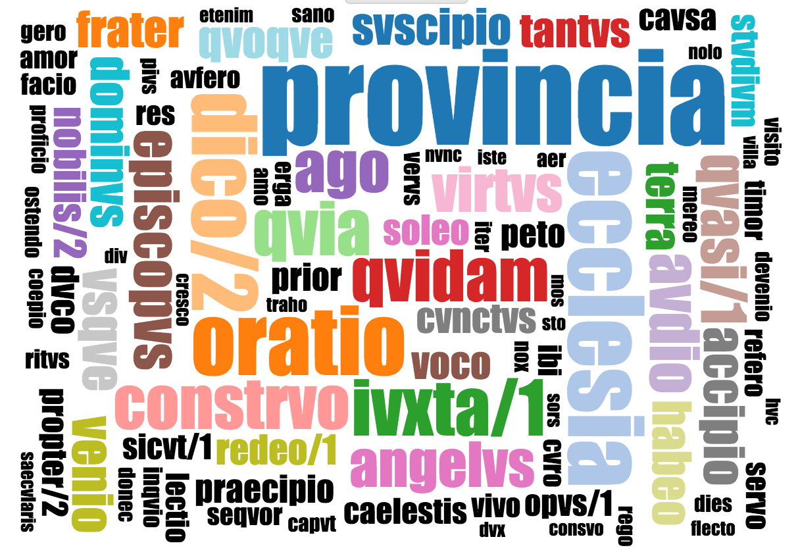
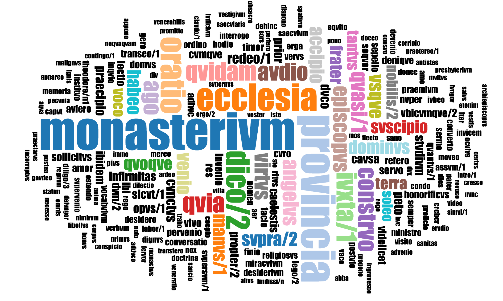

The wordcloud tab of Loquela creates wordclouds for topics of the user's choosing. It displays the words in a topic side by side, increasing the size of the most prevalent ones. Viewing it can offer insight into what a topic is "about" and which words are connected to one another.
Construction
The wordcloud displays all of a given topic's most important words. The bigger a word is, the more prevalent it is in the topic. Wordcloud generation is randomized, so each will have a slightly different layout. Thanks to Jason Davies for the generation algorithm.

Resizing
To view more of the topic's words, expand the window size and click the resize button. This will create a brand new wordcloud that takes up the available space.
 